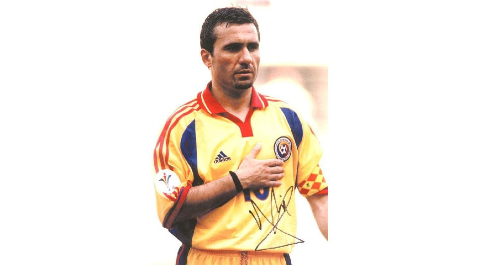

Cariera de jucător a lui Gică Hagi
Foto: Hagi căpitan al naționalei României (sursa: ilustrată) Astăzi , Gică Hagi a împlinit 53 de ani. Să-i revedem, pas cu pas, fabuloasa carieră. 1965 În satul Săcele (jud. Constanţa), într-o familie de aromâni veniţi din Grecia în 1932, se naşte Gheorghe Hagi, al treilea şi ultimul fiu (singurul băiat) al lui Iancu şi Chiraţa Hagi (5 februarie). 1970 Începe să joace fotbal pe maidanele satului natal * Merge pentru prima dată la grădiniţa din satul natal (toamna). 1971 Începe şcoala, în satul natal (toamna). 1973 Se mută împreună cu familia la Constanţa (vara), devenind elev al Şcolii Generale nr. 23 din localitate şi jucând fotbal pe str. Artileriei sau pe terenul Şcolii Generale nr. 11. 1975 Recomandat de Constantin Aurel (legitimat la copiii lui FC Constanţa), antrenorul Iosif Bükössy îl primeşte la primul său antrenament de fotbal organizat, la copiii lui FC Constanţa, jucând atacant la o grupă de vârstă cu doi ani mai mare (4 aprilie). 1976 Prima participare la o competiţie, Cupa Speranţelor (un campionat naţional de minifotbal pentru copii sub 12 ani, organizat la Constanţa). Echipa lui Hagi, Tomis Constanţa (o echipă alcătuită ad-hoc, antrenor Cornel Bădilă), ocupă locul 2, iar Hagi este declarat cel mai tehnic jucător (3 septembrie), ocazie cu care îi apare pentru prima dată numele în presă, în “Litoral”, supliment al cotidianului constănţean “Dobrogea Nouă” (5 septembrie), şi apoi în singurul cotidian sportiv naţional, “Sportul” (7 septembrie). 1978 Prima legitimare (carnetul nr. 97.515), la copiii lui FC Constanţa (24 martie), cu care participă în campionatul judeţean de juniori * Prima convocare la o tabără naţională de juniori, la Simeria, sub conducerea antrenorului Constantin Ardeleanu (iulie). 1979 Primul meci internaţional, primul meci susţinut în afara ţării şi, totodată, prima selecţie într-un lot naţional de juniori, România U16 (antrenor Constantin Ardeleanu) învingând cu 2-0 echipa similară a Greciei, la turneul de minifotbal pentru juniori de la Montaigu (Franţa) (13 aprilie). Cu această ocazie, Hagi primeşte primii săi bani câştigaţi din fotbal, 60 franci francezi * Începe liceul, la Liceul Industrial nr. 5 din Constanţa * Refuzând să se prezinte la Luceafărul București, este suspendat pe termen nelimitat de către federaţie, dar continuă să joace pe fals pentru juniorii lui FC Constanţa, în campionatul judeţean de juniori (septembrie). 1980 Suspendarea este ridicată (ianuarie) * Participă pentru prima dată la campionatul naţional de juniori U18, cu FC Constanţa (primăvara) * Se mută la Bucureşti, transferându-se la Luceafărul București (care reunea echipele naţionale de juniori şi unde îl avea ca antrenor pe Aurel Măndoiu), iar cu şcoala la Liceul Electroaparataj (iulie) * Cu Luceafărul III participă în campionatul naţional de juniori U18 (toamna). 1981 Prima selecţie în naţionala de juniori U17, Bulgaria – România 0-0 în meci amical (11 martie) * Primul meci la seniori, Luceafărul II participând în seria a V-a a Diviziei C (vara) * Primul meci internaţional oficial, România – URSS 0-1 la Bucureşti, în preliminariile CE de juniori U16, Hagi jucând extremă stânga, post pe care va evolua mai mult timp (18 octombrie) * La naţionala de juniori U17 îl are ca antrenor pe Mircea Rădulescu (decembrie). Debutul în Divizia A și-n națională 1982 Prima selecţie în naţionala de juniori U18, România – Turcia 0-0 în meci amical (14 februarie), antrenor fiind Marcel Pigulea * Debutează în eşalonul secund, Luceafărul I participând în seria a II-a a Diviziei B (14 martie) * În paralel, Hagi joacă şi la FC Constanţa, în campionatul naţional de juniori U18 (mai) * Se transferă la FC Constanţa (seniori), continuând să evolueze şi pentru Luceafărul I (vara) * Debutează în Divizia A, jucând integral meciul SC Bacău – FC Constanţa 3-0 din etapa a 6-a, ca mijlocaş dreapta, şi primind un cartonaş galben (11 septembrie). Antrenor era Emanoil Haşoti, ulterior înlocuit cu Constantin Tâlvescu (noiembrie) * Marchează primul gol în Divizia A, în min. 88 al meciului Steaua – FC Constanţa 2-2, din etapa a 14-a (6 noiembrie). 1983 Este convocat pentru prima dată la un stagiu de pregătire al echipei naţionale A, fără a mai trece prin reprezentativa de tineret. Antrenor era Mircea Lucescu (6 ianuarie) * Participă, cu naţionala de juniori U18, la primul său turneu final, cel al CE de juniori U18 din Anglia (13-17 mai) * FC Constanţa retrogradează în Divizia B (vara) * Terminându-şi junioratul, pleacă de la Luceafărul (vara) * Este transferat de la FC Constanţa la Sportul Studenţesc (vara), unde antrenor era Ion Voica, ulterior înlocuit cu Constantin Ardeleanu (decembrie) * Debutează în echipa naţională A, jucând integral, ca mijlocaş stânga, amicalul Norvegia – România 0-0 (10 august) * Debutează în cupele europene, jucând integral, ca extremă stânga, meciul Sportul Studenţesc – Sturm Graz 1-2, din prima manşă a turului I din Cupa UEFA (14 septembrie) * Depune jurământul militar (toamna) * Debutează în echipa naţională olimpică, în meciul Olanda – România 0-0, din preliminariile JO. Antrenor era Gheorghe Staicu (5 octombrie) * Debutează într-un meci oficial al echipei naţionale A, intrând în min. 46 al partidei Cipru – România 0-1, din preliminariile CE (12 noiembrie).
1984 Îşi cumpără prima maşină, o Dacia 1300 nouă (primăvara) * Cu echipa naţională participă la primul său mare turneu final, la CE din Franţa, jucând în meciurile cu Spania (intrat în min. 76) (14 iunie) şi Germania de Vest (înlocuit în min. 46) (17 iunie) * Internazionale este primul club străin care doreşte să îl transfere (vara) * Începe cursurile Academiei de Studii Economice din Bucureşti (toamna) * Se stabileşte pe postul de mijlocaş stânga (vara) * Înscrie primul gol pentru naţională, în min. 36 al meciului Irlanda de Nord – România 3-2, din preliminariile CM (12 septembrie) * În ancheta realizată de cotidianul “Sportul”, privind cel mai bun fotbalist român al anului, ocupă locul 2 (decembrie). 1985 Cu 20 goluri marcate, cucereşte primul său titlu de golgeter al Diviziei A (19 iunie) * Evoluează pentru prima dată pe vechiul stadion Wembley din Londra, în meciul Anglia – România 1-1, din preliminariile CM (11 septembrie) * Înscrie primele goluri în cupele europene, marcând de trei ori (de două ori din penalty) în meciul Sportul Studenţesc – Neuchatel Xamax 4-4, din manşa secundă a turului I din Cupa UEFA (3 octombrie) * Este desemnat în premieră căpitan al naţionalei, în meciul România – Irlanda de Nord 0-1, din preliminariile CM (16 octombrie) * Ancheta cotidianului “Sportul” îl desemnează cel mai bun fotbalist român al anului, iar în ancheta lunarului englez “World Soccer”, privind cel mai bun fotbalist din lume al anului, ocupă locul 18 (decembrie). 1986 Marchează 6 goluri (record personal) în meciul Sportul Studenţesc – FC Olt 7-5, din etapa a 34-a a Diviziei A (18 iunie), devenind, cu 31 goluri marcate, golgeter al campionatului * Are un nou antrenor la naţională, Emerich Jenei (octombrie). În marea echipă a Stelei 1987 Este transferat la Steaua, doar pentru meciul din Supercupa Europei. Antrenor era Anghel Iordănescu (ianuarie) * Joacă (înlocuit în min. 84) şi câştigă prima sa finală de cupă europeană, marcând unicul gol al meciului Steaua – Dinamo Kiev 1-0 din Supercupa Europei, disputat la Monte Carlo (24 februarie) * Prin abuz, dar cu voința lui, rămâne la Steaua (primăvara) * Cu Steaua câştigă primele titluri, de campion naţional şi Cupa României (iunie) * Ancheta cotidianului “Sportul” îl desemnează cel mai bun fotbalist român al anului (decembrie). 1988 Cu Steaua ajunge în semifinalele CCE (aprilie), cucereşte titlul de campion naţional şi Cupa României (iunie), aceasta din urmă fiind ulterior retrasă * Cu 4 goluri marcate, este golgeterul ediţiei în CCE, împreună cu alţi cinci jucători (mai) * Este dorit de Panathinaikos (vara).
1990 Cu echipa naţională participă la primul său turneu final de CM, cel din Italia, jucând primul său meci contra Camerunului (1-2) (14 iunie) şi ajungând în optimi (25 iunie) * Se transferă în Spania, la Real Madrid, pentru 4,5 mil. dolari; până în 2008, aceasta va fi cea mai mare sumă primită de un club românesc pentru un jucător (vara). Antrenor era galezul Benjamin Toshack, ulterior înlocuit cu argentinianul Alfredo di Stefano (toamna) * Se căsătoreşte cu Leni Celnicu (vara) * Se stabileşte pe postul de mijlocaş coordonator (vara) * Are un nou antrenor la echipa naţională: Gheorghe Constantin (septembrie) * Participă la primul său meci demonstrativ, marcând un gol pentru Restul Lumii, învingătoare cu 2-1 în partida cu Brazilia, disputată la Milano, în cinstea zilei de naştere a lui Pele (1 noiembrie) * Cu Real Madrid câștigă Supercupa Spaniei (decembrie).
1991 Are noi antrenori: Mircea Rădulescu la echipa naţională (martie), iugoslavul Radomir Antic la Real Madrid (primăvara) * Preia banderola de căpitan al naţionalei (17 aprilie) * Ioan Becali devine impresarul său (vara) * Divorţează de Leni Celnicu (vara). 1992 Înscrie un gol legendar, printr-un lob de la 45 m, în meciul Real Madrid – Osasuna 5-2, din campionatul Spaniei (12 ianuarie) * Are noi antrenori: olandezul Leo Beenhakker la Real Madrid (februarie), Cornel Dinu la echipa naţională (aprilie) * Cu Real Madrid ajunge în semifinalele Cupei UEFA (aprilie) * Se transferă în Italia, la Brescia, unde antrenor era Mircea Lucescu (vara). 1993 Brescia retrogradează în divizia secundă (12 iunie) * Ancheta cotidianului “Gazeta Sporturilor” îl desemnează cel mai bun fotbalist român al anului (decembrie). 1994 Cu Brescia câştigă Cupa Anglo-Italiană, rezervată cluburilor de eşalon secund din Anglia şi Italia (20 martie) * Este eliminat în min. 66 al amicalului Irlanda de Nord – România 2-0 (23 martie) * Cu echipa naţională participă la al doilea său turneu final de CM, cel din SUA, înscriind trei goluri – primul, în min. 34 al meciului România – Columbia 3-1, din prima rundă a grupei A (18 iunie), unul dintre golurile celebre ale istoriei fotbalului mondial –, eliminând Argentina în optimi (3-2, marcând un gol, la 3 iulie) și ajungând în sferturi (eliminare la lovituri de departajare – unde a transformat o lovitură – cu Suedia, la 10 iulie) * Este inclus, ca mijlocaş coordonator, în echipa ideală a CM, alcătuită de FIFA (vara) * Se transferă în Spania, la Barcelona, unde antrenor era olandezul Johan Cruyff (vara) * Cu Barcelona câștigă Supercupa Spaniei (august) * Este desemnat cel mai bun sportiv al anului în România, cel mai bun fotbalist român al anului (în ancheta cotidianului “Gazeta Sporturilor”), iar în ancheta săptămânalului francez “France Football”, privind cel mai bun jucător european al anului (”Balonul de Aur”), ocupă locul 4-5, cea mai bună poziţie deţinută vreodată de un jucător român (decembrie). 1995 Se căsătoreşte cu Marilena Vlahbei (vara).
Perioada Galata
1997 Cu Galatasaray câştigă titlul de campion al Turciei şi Supercupa Turciei (iunie) şi participă pentru prima dată în grupele Ligii Campionilor (toamna) * Înscriind (din penalty) în min. 82 al meciului România – Islanda 4-0, din preliminariile CM, devine, cu 31 goluri, recordmanul golurilor marcate în naţională (10 septembrie) * Se stinge din viaţă Iancu Hagi (toamna) * Participă la al doilea său meci demonstrativ, la Madrid, cu ocazia “Zilei împotriva rasismului”. S-au înfruntat, jucând fiecare cu fiecare reprize de 45 minute, trei selecţionate mondiale, echipa lui Hagi pierzând cu 3-2 în faţa primei echipe şi câştigând cu 3-1 în faţa celeilalte (12 octombrie) * Ancheta cotidianului “Gazeta Sporturilor” îl desemnează cel mai bun fotbalist român al anului (decembrie). 1998 În amicalul Belgia – România 1-1 atinge 109 selecţii, devenind recordmanul prezenţelor în naţională (22 aprilie) * Cu Galatasaray câştigă titlul de campion al Turciei (mai) * Participă la al treilea său meci demonstrativ, în localitatea franceză Villeneuve d’Ascq, partidă disputată în beneficiul jucătorului belgian Jean-Marc Bosman, cel care a generat “Legea Bosman”. S-au înfruntat două selecţionate mondiale, echipa din care Hagi a făcut parte învingând cu 3-1, două goluri fiind marcate de Hagi (12 mai) * Cu echipa naţională participă la al treilea său turneu final de CM, cel din Franţa, ajungând în optimi (30 iunie), după care se retrage din naţională * Participă la al 4-lea său meci demonstrativ, la Istanbul, cu ocazia sărbătoririi a 75 ani de la înfiinţarea federaţiei Turciei. S-au înfruntat o selecţionată a campionatului turcesc şi o selecţionată mondială, din care a făcut parte şi Hagi, autor a 3 goluri (unul din penalty). Meciul s-a încheiat 4-4 (9 septembrie) * Se naşte al doilea copil al său, Ianis (toamna). 1999 Se stinge din viaţă Chiraţa Hagi (februarie) * Acceptă să revină la naţională doar pentru meciul cu Ungaria (16 mai) * Evoluează în meciul România – Ungaria 2-0, din preliminariile CE (5 iunie), după care decide să îşi continue activitatea la echipa naţională. Antrenor era Victor Piţurcă, la a cărui înlocuire va contribui decisiv, în urma unui conflict între cei doi (noiembrie) * Cu Galatasaray câştigă titlul de campion al Turciei şi Cupa Turciei (iunie) * Este desemnat cel mai bun fotbalist român al anului (în ancheta cotidianului “Gazeta Sporturilor”), cel mai bun fotbalist român al secolului (în ancheta cotidianului “Naţional” şi a TV România, actuala TVR), este inclus în echipa ideală românească a secolului (în ancheta cotidianului “Gazeta Sporturilor”), iar în ancheta lunarului englez “World Soccer”, privind cel mai bun jucător din lume al tuturor timpurilor, ocupă locul 25 (decembrie). 2000 Are un nou antrenor la echipa naţională, pe Emerich Jenei (martie) * Stadionul din Constanţa primeşte numele “Gheorghe Hagi”, cu ocazia amicalului România – Cipru 2-0, în care a jucat şi Hagi (26 aprilie) * Cu Galatasaray câştigă titlul de campion al Turciei, Cupa Turciei (mai), Cupa UEFA (0-0 d.p. şi 4-1 l.d. în finala cu Arsenal, la Copenhaga, meci în care a fost eliminat în min. 93) (17 mai) şi Supercupa Europei (2-1 d.p. cu Real Madrid, la Monte Carlo) (25 august) * Cu echipa naţională participă la al treilea său turneu final de CE, cel din Belgia şi Olanda, ajungând în sferturi (24 iunie). Sfertul pierdut cu 2-0 în faţa Italiei, în care a fost eliminat în min. 59, constituie ultima sa selecţie, el retrăgându-se din națională după acest turneu * La nivelul naţionalei, era, în acel moment, recordmanul selecţiilor (125), al golurilor marcate (35), al prezenţelor ca şi căpitan (62) şi al longevităţii (16 ani, 10 luni şi 14 zile) * Primeşte Ordinul Naţional “Serviciu Credincios”, în grad de Comandor (toamna) * Ancheta cotidianului “Gazeta Sporturilor” îl desemnează cel mai bun fotbalist român al anului (decembrie). 2001 Cu 95 meciuri şi 30 goluri marcate, era în acel moment recordmanul român al prezenţelor şi golgeterul român în cupele europene (aprilie) * Meciul său demonstrativ de retragere (”Gala Hagi”) are loc la Bucureşti, pe stadionul Național, o selecţionată a României înfruntând o selecţionată mondială (Stelele Lumii), scorul fiind 2-2 (24 aprilie) * După meciul Galatasaray – Trabzonspor 4-0 (din etapa a 34-a, ultima, a campionatului Turciei), în care a marcat două goluri (în min. 25 și 44, ultimul din penalty), se retrage din activitatea de jucător (26 mai).